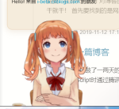

原文出处:本文由博客园博主库巴亚西康纳提供。
原文连接:https://www.cnblogs.com/kangna/p/11839046.html
原文连接:https://www.cnblogs.com/kangna/p/11839046.html
捏黑~捣鼓了一两天的博客开张啦
大家好，我是学习前端两月半的菜鸟程序员，喜欢看番，打游戏，写代码

哈哈，开个玩笑，有一说一，最开始我准备在学完CSS3和JavaScript时通过腾讯云自建博客网站，可是考虑到难度和使用、维护，最终在多个平台中选择了博客园。（当然，某sdn广告和水分实在是不敢恭维 ）
既然创建了这个博客，我当然会尽我所能去丰富它，去完善它，当然，这也会是我自己沉淀知识、思考学习的重要平台
首先回顾这几天的历程：
在这之中，我也在博客园中学习了很多dalao的经验，当然也cv了许多的代码（滑稽护体）
首先是框架的选取：在浏览了许多模板之后，我选择了simpleMemory主题-----轻巧简洁，而且适合添加script特效。在此之前，在还未学完CSS3和学到javascript时，为网页添加全局script特效也让我查了好久，直到看到范仁义 的博客时才得以解决。也正是在这时，算是和博客园结缘了吧。
一句话总结：最简单的做法是绝对定位并且z-index属性设置为负数。
可以设置层级的方法。即在canvs标签中为其position标签添加absolute属性
绌例:
bg是一个线条相连的动态script PS：哈哈，原谅我在第一次在这上面编写博客，暂时还不会编排技巧的使用，比如几行字应该在照片两张img旁边的，浪费了不少空间
在为博客挑选了祢豆子作为bkg，又添加了两组下雪特效和鼠标点击特效之后，整个博客基本就这样完成啦(◡ᴗ◡✿)~当然，还有最最最重要的live2D特效ԅ(¯﹃¯ԅ) お休み~
